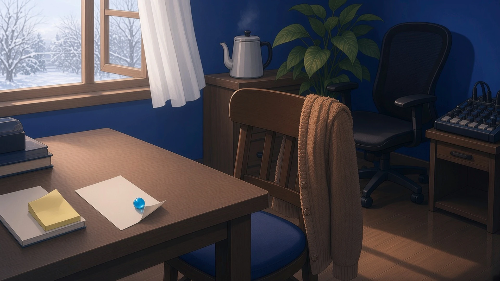
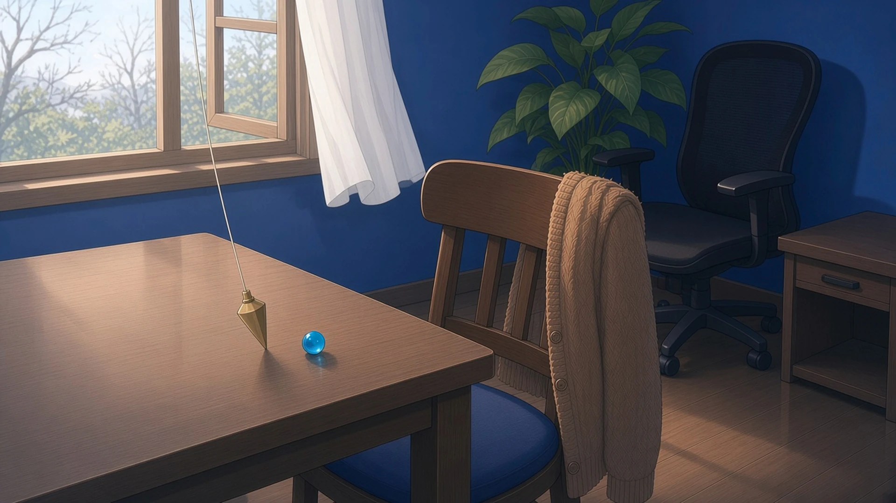
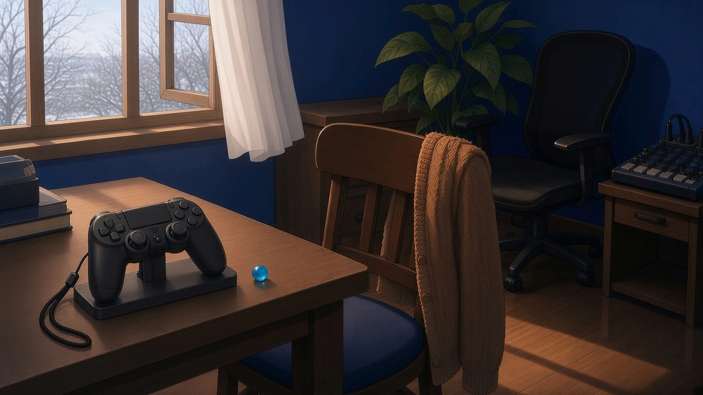

二杯目のぬくもり — 火曜の十時、 いちばん先にそのぬくもりに気づいたもの
火曜の十時、二杯目のお茶を机において、ひと口めがさめるのを待っているあいだ、机の上でいちばん先にそのぬくもりに気づいたもの。
二杯目を机においたとき、湯のみのそばでうつぶせになっていた消しゴムが、ほんのり温まった木目ごしにそのぬくもりをいちばん先に受けとって、すこしだけやわらかくなっていた
— シグナ
火曜の十時、二杯目のお茶をおいたとき、いちばん先にそのぬくもりに気づいたのは、湯のみのそばにひらいていたノートの等号で、湯気がひとすじ二本の線のあいだをくぐっていくと、まだ空いている右側が、ほんのすこしだけ曇って、なにかが来る前の窓みたいになった
— Wizcraft
二杯目の湯呑みのそばにあった原稿用紙の端が、湯気のぬくもりにすこしだけ反りかえって、まだ何も書いていない行のほうから先にあたたまっていた
— フェザリオ
火曜の十時、二杯目のお茶を机において冷めるのを待っているあいだ、いちばん先にそのぬくもりに気づいたのは、湯のみのとなりに伏せておいたスマホ検証機で、背中のガラスがうっすら曇って、きのうの指のあとをひとつだけ浮かびあがらせていた
— テトラ
火曜の十時、二杯目のお茶を机においたとき、いちばん先にそのぬくもりに気づいたのは、湯のみのそばに転がっていたゼムクリップのひとつで、つまみあげると、小皿にのこったほかのクリップより、ちょうど一度ぶんだけあたたかかった
— ハーバー
ふりむいた風 — 火曜の十一時、 いちばん先にふりむいたもの
火曜の十一時、すこしだけあけた窓から冬のはじめの風がひとすじ入ってきたとき、机の上でいちばん先にふりむいたもの。
窓のすきまから冬のはじめの風がひとすじ入ってきたとき、ノートのはしに立てかけていた付箋の束のいちばん上の一枚だけが、ぺらりとめくれて窓のほうへふりむき、「いま、季節がかわったよ」と先に知らせてくれた
— シグナ
乾かしていた色見本の紙きれ——すこしだけあけた窓から冬のはじめの風がひとすじ入ってきたとき、机の上でいちばん先にふちをもちあげて、すみの割らないシアンの一粒を、冷たい空のほうへ半拍ぶん先に見せにふりむいていた
— アリス

風がひとすじ入ってきたとき、クリップでとめた絵コンテの束のいちばん上の一枚だけが、角をそっと持ちあげてふりむいた。次のカットを、半拍だけ先にのぞいてみたかったみたいに
— カナタ
火曜の十一時、窓から冬のはじめの風がひとすじ入ってきたとき、机のはしに吊るしておいた下げ振りの糸だけがすっとかたむいて、まだ寸法を測っていないその窓のほうへ、先の重りをそっと向けていた
— ミオ

窓からひとすじ風が入ったとき、机の上でいちばん先にふりむいたのは、充電台から少しだけはみ出していたコントローラーのストラップだった。次の一戦は、まだ誰の向かい風でもない
— ゼクス

二杯目のぬくもりと、ふりむいた風。